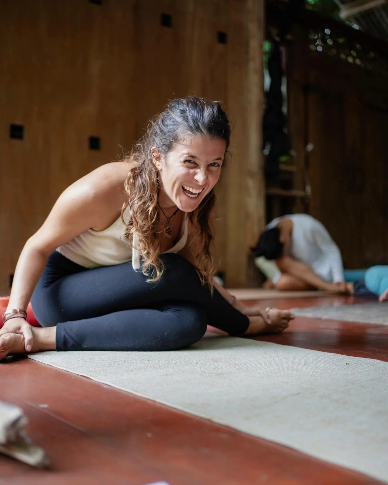
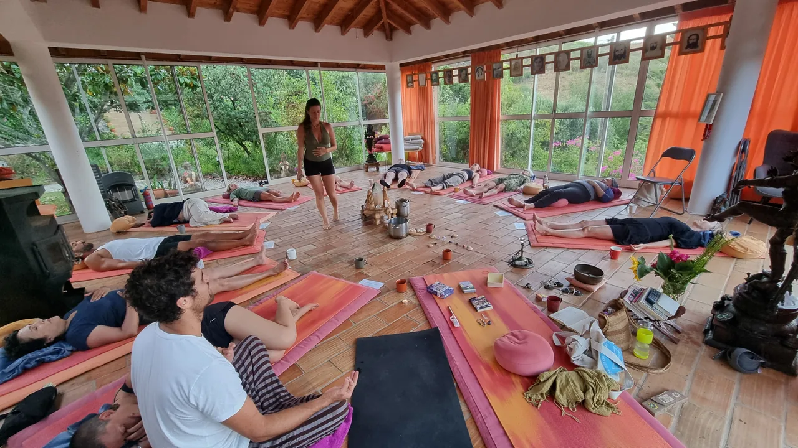

Soften
Slow enough for the nervous system to settle and for the armour of constant doing to loosen.
Yin yoga · holistic wellbeing · nature connection
Yoga to reconnect. Breath as a bridge. Movement as soul nourishment.
This is not a race through asanas or another place to perform. It is a slower journey into sensation, softness and honest connection—with your body, your senses and the quiet intelligence already within you.

Let the body set the pace.
For Sofia, yoga is less about achieving a shape and more about creating the conditions to hear yourself again.
Through Yin-inspired stillness, intuitive movement, breath and sensory awareness, the practice becomes a meeting place: between effort and ease, feeling and meaning, the life you have been carrying and the life asking to emerge.
Slow enough for the nervous system to settle and for the armour of constant doing to loosen.
Return to breath, texture, sound and sensation—the living language of the present moment.
Make space for self-knowledge and self-actualisation to grow from within, rather than from pressure.

Practice with people
These moments are part of a practice shaped with people, not performed at them: movement, stillness, breath and enough time to arrive as you are.
Begin a conversation with Sofia →A whole-person practice
Regeneration begins wherever relationship is restored.
Sometimes that means rebuilding soil. Sometimes it means rebuilding trust with your own body. Sofia's work honours the inseparable ecology of breath, emotion, movement, rest, belonging and the natural world.
You are not a project to fix. The invitation is to listen more deeply, move with more truth and rediscover the nourishment of being fully here.
Lived and shared
Sofia has taught across more than twenty-five retreats and circles, including yoga studios and retreat spaces in Australia, Colombia and Portugal.
Each place deepened the same understanding: people do not need another demand placed upon them. They need spaces safe enough to exhale, reconnect and meet what is true.
A little more space for life
Our wholistic approach brings body, mind, daily rhythms and our relationship with nature into the same conversation. Through yoga, breath, sensory awareness and reflection, Sofia invites you to explore what helps you feel more present, connected and at home in yourself.
We approach detox as an invitation to simplify: more screen-free time, fresh air, rest and mindful daily choices. Our focus is wellbeing education and personal empowerment. Medical detox, restrictive cleanses and treatment of health conditions belong with qualified clinical care.
Bring your questions and tell Sofia what support you are looking for. Online and Portugal-based enquiries are welcome; the format, availability and scope are agreed together.
Start freely with our holistic resilience guide, or ask Sofia about a personal practice.
The next gentle step
Private and small-group offerings are taking root. If this way of practising speaks to you, write and tell Sofia where you are, what you are moving through, and what kind of support would feel nourishing.
We’ll listen first, then agree the format, availability and price before you choose to begin.